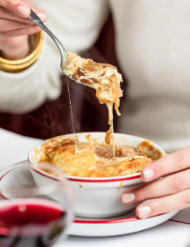
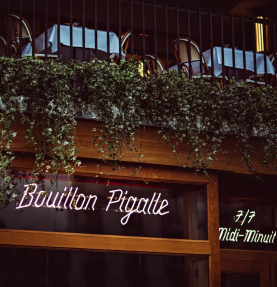
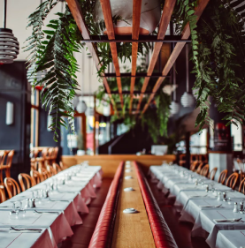

Le Bouillon Pigalle
In 2017, Bouillon Pigalle was established in Paris. This is brasserie offering traditional French dishes with the signature dishes of onion soup, snails in parsley butter, salt cod brandade and beef bourguignon. The place is famous throughout Paris for its atmosphere of 19th century vintage Parisian restaurants. It is an affordable restaurant with low price ranges that offers an experience close to fine dining authentic restaurants. Trying authentic 3 course meals in under 80 euros makes this restaurant a must visit. It is a large restaurants with balcony seating and indoor seating. Though, it tends to get filled early in the evening, making it a must to make a booking in advance.



